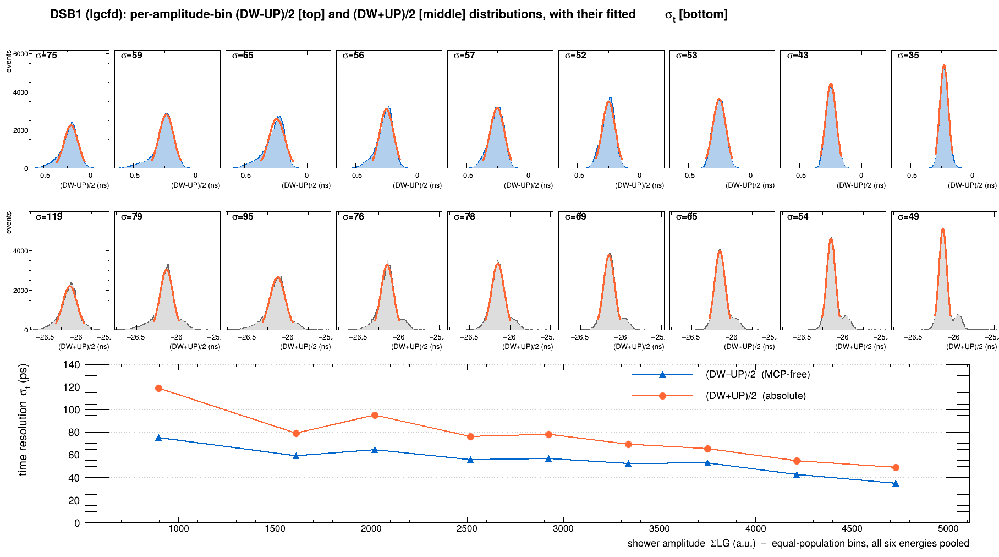
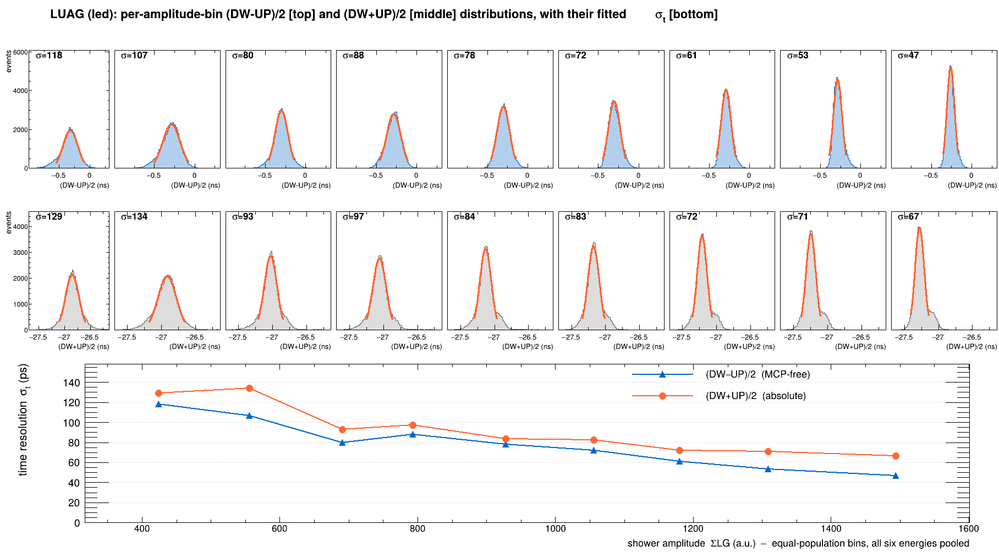
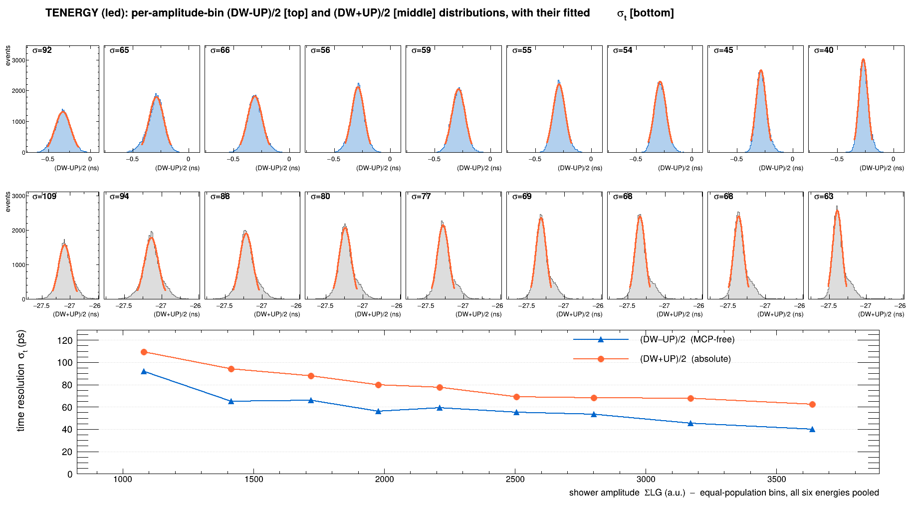
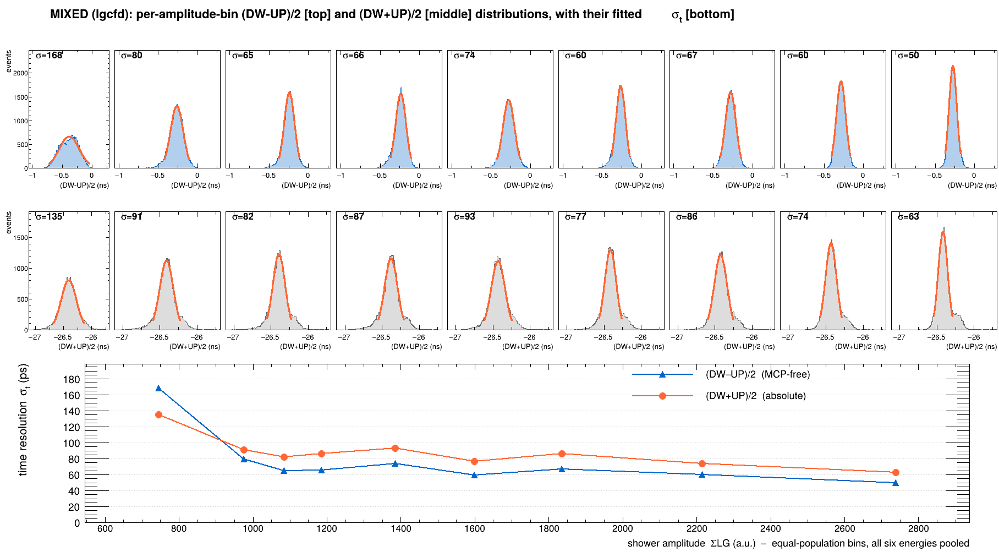
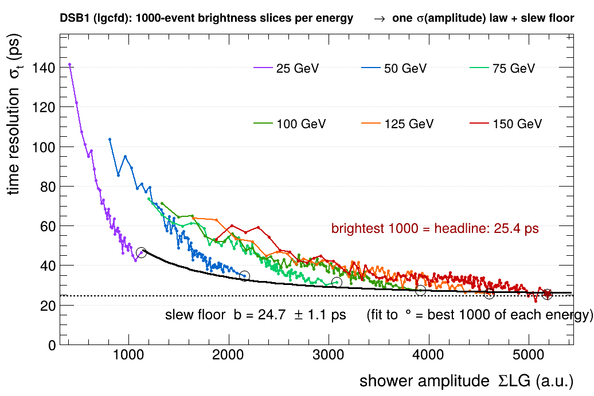
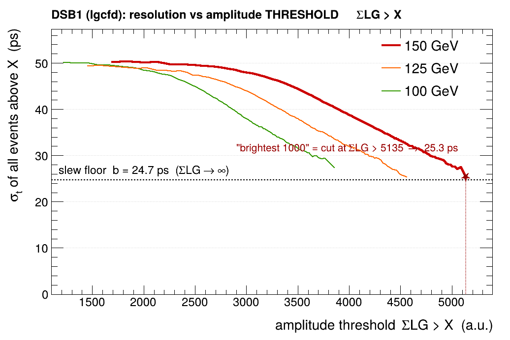
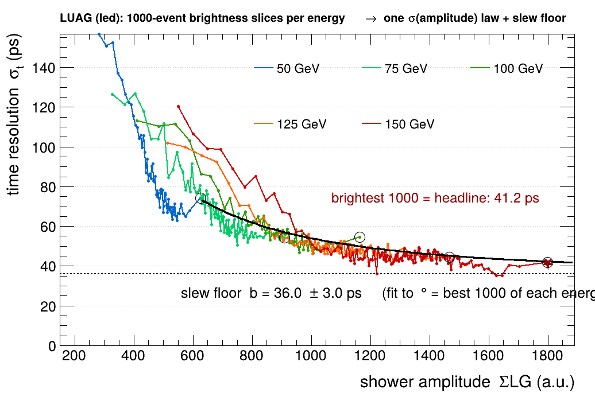
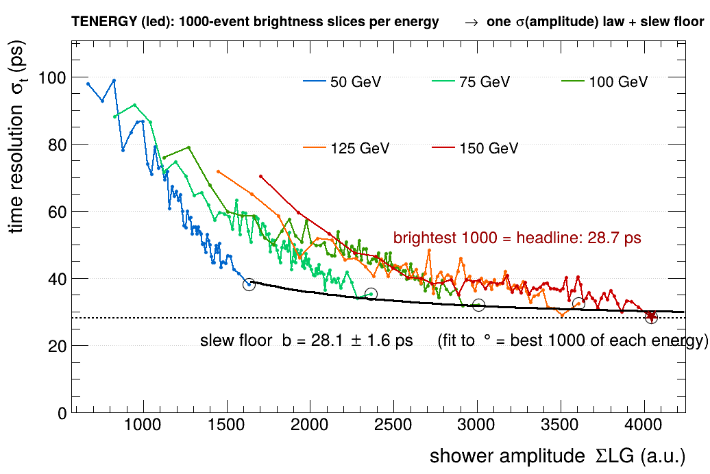
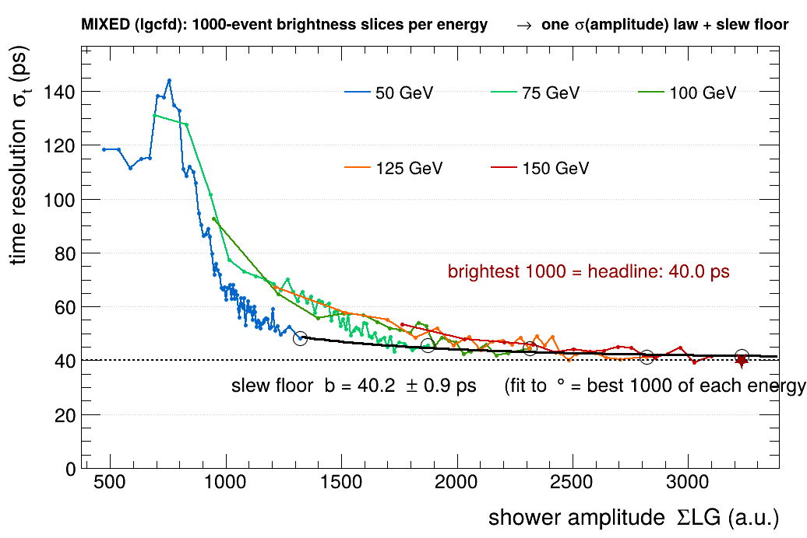

A calorimeter that also tells time
RADiCAL is a compact tungsten / LYSO:Ce shashlik electromagnetic calorimeter — 25 radiation lengths in ~135 mm. An electron shower deposits its energy as scintillation light, collected by four wavelength-shifting capillaries read out at both ends (Down and Up) — eight SiPM channels in all.
Every channel is recorded twice, at two gains. The high-gain (HG) copy is the fast timing channel; the low-gain (LG) copy measures energy and stays linear all the way to 150 GeV. Two CAEN DT5742 digitizers sample every waveform at 5 GS/s (1024 cells), with a micro-channel-plate PMT providing a common start t₀ and wire chambers tracking where each electron entered.
The timing observable is the depth half-difference (DW−UP)/2 — half the difference between the down-end and up-end shower times. The common start cancels, leaving a clean, self-referencing measure of how deep in the crystal the shower developed. Target resolution: 20–30 ps. The rest of this page is the story of getting there.
The timing channel saturates
The HG channel is digitized in a DC-offset window built to also catch the pulse's negative afterswing. The price: a hard ceiling. Every HG pulse clips flat at ~820 mV. At 25 GeV only a few percent of pulses reach it; by 75 GeV and above, 90–94% are clipped — the true peak is simply gone.

Constant-fraction discrimination (CFD) times a pulse at a fixed fraction of its peak. But if the peak you measure is the clip, the fraction is wrong — the crossing slides down to the low-slope foot of the pulse, exactly where timing is most fragile. The tell is unmistakable:
The low-gain copy never clips
The same shower that saturates the HG channel lands, attenuated, in the LG channel — where it stays comfortably on-scale and linear to 150 GeV. HG and LG are one pulse seen at two gains, so they are tied by a single constant: HG_peak = a + b·LG_peak. Crucially, that gain ratio is a property of the electronics, not the shower — it must not depend on beam energy.


hg_lgcfd: put the threshold on the edge
The fix follows directly. For each event, predict the true (unclipped) HG peak from the low-gain copy, HG_true = a + b·LG_peak, and place the CFD threshold at 15% of that true peak. Because the true peak towers over the clip, 15% of it lands high on the steep rising edge — not down on the foot. We call this hg_lgcfd.

Why 15%? Push the fraction to 30% and, for the brightest showers, the threshold rides into the clip itself and the timing blows up. 15% is the steep-but-safe sweet spot — ~98.5% of pulses yield a valid crossing. The recipe is calibrated once from clean, unclipped low-energy data (calibHGLG) and applied at every energy.
Better where it's clipped — monotonic, and held-out honest
Run the de-biased (equal-population) best-bin (DW−UP)/2 pipeline for both methods. hg_lgcfd falls monotonically with energy and sits below cfd05 at every clipped energy — and, crucially, it survives held-out (fold-by-run) validation unchanged: 29.6 ps in-sample = 29.6 ps out-of-sample at 150 GeV. No overfitting.
| E (GeV) | 25 | 50 | 75 | 100 | 125 | 150 | floor b |
|---|---|---|---|---|---|---|---|
| cfd05 | 51.1 | 42.0 | 36.4 | 35.8 | 35.6 | 33.1 | 28.8 |
| hg_lgcfd | 48.3 | 38.7 | 32.9 | 31.1 | 29.9 | 29.6 | 23.2 |

A bin that starved the brightest showers
The first version of this ladder showed 150 GeV reading worse than 125 — which can't be right, since 150 GeV makes more light. Chasing it down exposed a real bug in the headline estimator. Resolution is read by slicing events into energy bins and taking the best (brightest) one; the original code used equal-width μ±2σ bins, whose top bin sits in the Gaussian tail — and that tail empties out as energy rises.

The fix: bin by equal population (quantile) so every slice — including the brightest — stays filled, and cross-check with the fixed brightest-1000 slice (the top 1000 events by light, identical statistical tightness at every energy). Both make the ladder monotonic, both survive held-out validation (at matched fraction, fold A ≈ fold B ≈ full) — they just quote a different selection tightness on the same smooth σ(brightness) curve: 25.3 ps (brightest-1000, the headline) to ~30 ps (typical).
But should you trust the “floor”?
Each curve, fit to σt = a/√E ⊕ b, reports a floor b — the softest number on this page. It's an extrapolation (no beam exceeded 150 GeV; σt is still falling there), and a and b are strongly anti-correlated (ρ ≈ −0.88). So rather than trust a bare fit — or, worse, force the floors equal — we let the data set the uncertainty: give each point its statistical error σ/√(2N), fit freely, and inflate the errors by √(χ²/ndf). (The fits come back at χ²/ndf of 8–14, so point-to-point systematics, not statistics, dominate the floor's error.)

So your instinct was right both ways: with proper errors the same-technique floors are statistically consistent, while the floor genuinely is per-technique — hg_lgcfd beats cfd05 in the floor itself (>4σ), not just at 150 GeV. We never force them equal; the data separates them. Because the floor is still an extrapolation, we headline the measured σt at 150 GeV, not the floor. (One thing that does overfit is the old equal-width best-bin argmin — which is why the published 27.4 ps cfd05 headline, arXiv:2401.01747, is the out-of-sample value: in-sample 25.6 → OOS 27.5.)
The floor is the shower, not the instrument
Why doesn't a 3.7× steeper edge give a 3.7× better resolution? Because by the time we average seven timing channels, the per-pulse slew term is already small — a few picoseconds. What dominates (DW−UP)/2 is something the electronics can't touch: the longitudinal depth of the shower fluctuates event to event, by about one radiation length of LYSO, and that half-difference is the measurement. The ~20–23 ps floor is shower-development physics.
So the HG/LG-ratio method does precisely the right thing — it recovers the true rising edge that saturation hid — and the experiment then tells us, cleanly, where the remaining limit lives. We push the instrument until the detector itself is the thing we're measuring. That is the headline: not a single number, but a method that takes the clipped foot off the table and leaves us face to face with the shower.
Four materials, one law: light yield sets the clock
RADiCAL ran four detector builds with different scintillators. Push the same de-biased pipeline through all of them — the same brightest-1000 method as the headline, with the most robust timing source per build — and they fall into a single clean ordering by scintillation light yield. More light → faster rising edge → better timing, exactly as the slew argument predicts. (Each build's best achievable is shown; the broader “typical” quantile number is ~4 ps higher, the same selection continuum as DSB1's headline.)
| Build | Scintillator | Best source | σt@150 (best, brightest-1000) | (typical) |
|---|---|---|---|---|
| DSB1 | LYSO:Ce — high light | lgcfd | 25.3 ps | 29.6 ps |
| TENERGY | 3×LYSO + Energy | led | 28.3 ps | 33.9 ps |
| MIXED | LYSO + LuAG mix | lgcfd | 39.1 ps | 41.4 ps |
| LUAG | LuAG:Ce — low light | led | 41.9 ps | 43.1 ps |

Why LuAG misbehaved — cfd05 fails on small pulses
The wobble was the timing source, not the build. cfd05 fires at 5% of the pulse peak — on LuAG's small (~380 mV), slow, low-light pulses at low energy, that 5% point sits low on a shallow, noisy edge, so the crossing time jitters by nanoseconds. The (DW−UP)/2 in those bins genuinely spans ~18 ns (with a few bins collapsing to spurious narrow fits). The cfd05 “best bin” was then the lowest survivor of a garbage set — which is exactly the non-monotonic ladder you'd have seen.
The fix isn't a patch — it's to stop trusting a cherry-picked number and pick the most robust source per build (the smoothest, most monotonic). For LuAG that's the fixed-threshold led: it fires at a set level on the edge rather than a fraction of a tiny, noisy peak, so the small low-light pulses that kill cfd05 don't break it (lgcfd works equally well). The result is a clean monotonic LuAG ladder — ~74 → 42 ps from 50 to 150 GeV. More light, better timing, as it must be. (LuAG's HG does also clip at high energy, 2% rising to 83% — but a robust source handles it; that was never the real problem.)
The proof: every bin is a clean Gaussian
The old σ-vs-bin diagnostic looked like garbage because it plotted the failing cfd05 — not because the underlying data was bad. Read with the robust source and shown the way the publication does it (arXiv:2401.01747, Fig. 21), the data is unambiguous. For each build we pool all six energies, bin by shower amplitude (ΣLG), and Gaussian-fit the (DW−UP)/2 (MCP-free) and (DW+UP)/2 (absolute) distributions in every bin — fitting the central peak only (the satellite shoulder excluded, exactly as the publication does). They are clean Gaussians at every amplitude, and the bottom panel is their fitted σt.




Resolution vs brightness — and the slew floor
Now read σt in consecutive 1000-event brightness slices — brightest 1000, next 1000, … — the same selection size as the headline, plotted separately per beam energy (a per-energy containment cut removes the under-measured tails that otherwise spike the dim end). Two things fall out. First, where the energies overlap in amplitude they land on one curve: timing is set by light yield, not beam energy. Second, σt falls faster than the 1/√light of photostatistics — it goes as 1/light, the signature of slew-rate timing (σt = noise/slope, and slope ∝ amplitude). We read the floor off the cleanest points: the brightest 1000 of each energy (one open circle per colour — each energy's best-measured, best-contained showers), fit with σt = √(a²/ΣLG² ⊕ b²) → the irreducible floor b as amplitude → ∞.

| Build | Headline (brightest 1000) | Slew floor b (ΣLG→∞) |
|---|---|---|
| DSB1 | 25.4 ps | 24.7 ± 1.1 ps |
| TENERGY | 28.7 ps | 28.1 ± 1.6 ps |
| MIXED | 40.0 ps | 40.2 ± 0.9 ps |
| LUAG | 41.2 ps | 36.0 ± 3.0 ps |
How you'd actually quote it: a threshold, not a count
“Brightest 1000” is convenient, but it's a fixed count — with 10× the beam time it would be a tighter, brighter 1000 and a lower number. The reproducible way is a threshold: quote σt for all showers above an amplitude cut ΣLG > X. Selecting the top 1000 is identical to one such cut (the amplitude of the 1000th-brightest event) — so scan the cut and the headline becomes one point on a continuous, dataset-size-independent curve.



